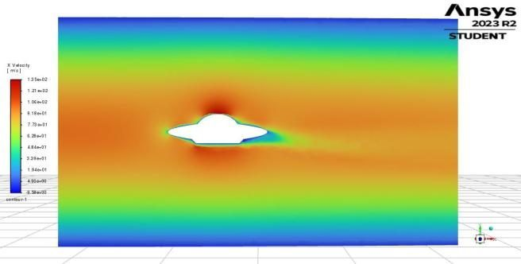
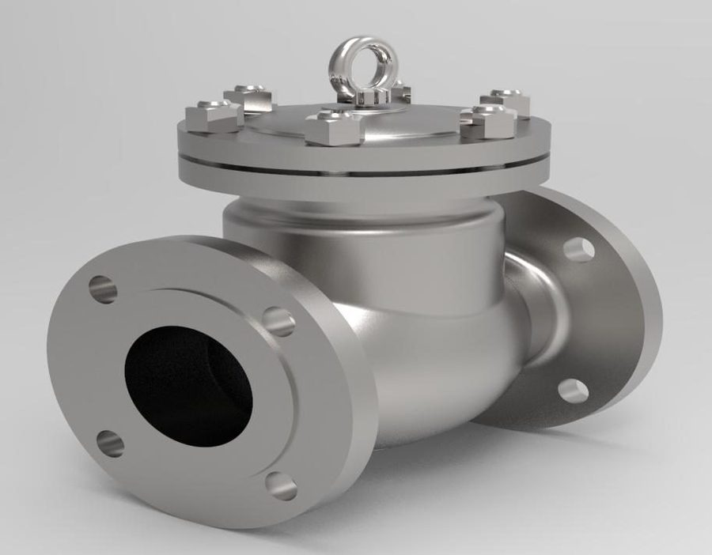
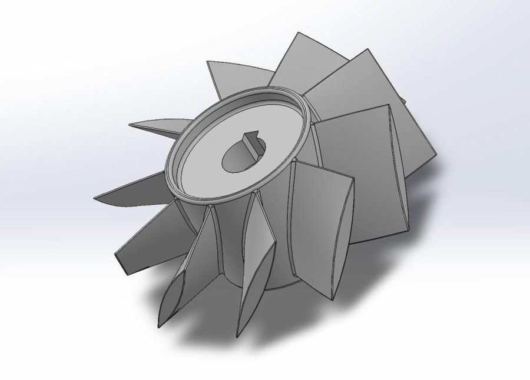
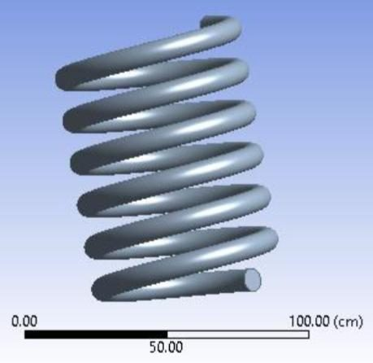
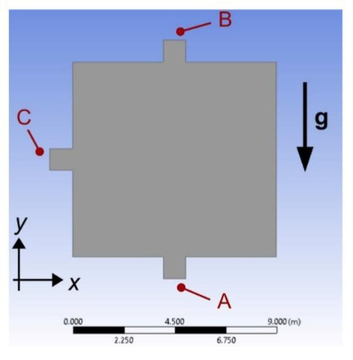
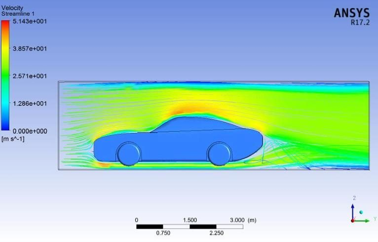

Mechanical Engineer · M.S., Arizona State University
Design, simulation and analysis of mechanical systems.
I model parts and assemblies in SolidWorks and CATIA, and analyze them with CFD and FEA in Ansys, Abaqus and my own MATLAB finite element code.




- Title
- Mechanical Portfolio
- Drawn by
- O. R. Gaikwad
- Sheet
- 1 / 1
01
About

I hold an M.S. in Mechanical Engineering from Arizona State University, with coursework in finite element engineering, applied CFD, robot modeling and control, and design of experiments. My background spans pharmaceutical, food and automotive manufacturing, from SolidWorks design and ANSYS FEA to equipment qualification in ISO 5/ISO 7 cleanrooms.
My academic projects centre on validating numerical results: mesh refinement, Richardson extrapolation, and comparison against hand calculations or closed-form solutions. I am looking for mechanical design, simulation and product development roles.
02
Technical skills
CAD & design
SolidWorks · CATIA V5 · PTC Creo · AutoCAD · Fusion 360 · GD&T · rapid prototyping
Simulation & analysis
Ansys Fluent · Abaqus · COMSOL Multiphysics · MATLAB FEM
Manufacturing
CNC machining · lathe · milling · 3D printing · metrology & quality control · equipment qualification (IQ/OQ/PQ) · MasterControl · ZOHO
Automation & controls
MATLAB & Simulink · Arduino IDE · robotics kinematics
Programming & data
Python · Matplotlib · CNC G-code · JMP (design of experiments) · Excel
03
Projects
Design & Robotics

Mechanical design and CAD (SolidWorks)





Structures & FEA

DWG 07 · Structures & FEA
Stress Concentration in Plexiglass: FEM vs Roark vs Abaqus
Three notched plexiglass specimens analyzed with three independent methods and compared with measured breaking loads.
Abaqus · MATLAB FEM · Roark's formulas
DWG 08 · Structures & FEA
Tension-Loaded PMMA Plate: Mesh Refinement Study
Abaqus model of a notched 74 × 74 mm PMMA plate in tension, with a mesh sensitivity study.
AbaqusDWG 09 · Structures & FEA
Steady-State Heat Conduction with Volumetric Heating
A steel rod with internal heat generation, solved with a MATLAB finite element program, Abaqus and symbolic analytical solutions.
MATLAB · Abaqus · symbolic mathFluid & Thermal

DWG 01 · Fluid & Thermal
Helical Pipe Heater: Conjugate Heat Transfer
A helical heater modeled from its defining equations and solved as 3D conjugate heat transfer, checked against hand calculations.
Ansys Fluent · SolidWorks
DWG 02 · Fluid & Thermal
Buoyancy-Driven Convection in a Water Tank
Transient natural convection in a cylindrical tank with a heated base, run at Earth and Moon gravity.
Ansys Fluent · SolidWorks
DWG 03 · Fluid & Thermal
Gas Leakage Dynamics in a Warehouse
Multiphase simulation of a methane leak and how fresh-air injection changes where the gas goes.
Ansys Fluent · VOF multiphaseDWG 10 · Fluid & Thermal
Converging-Diverging Nozzle: Subsonic to Supersonic Flow
2D compressible flow through a nozzle, from fully subsonic to supersonic as the pressure ratio changes.
Ansys Fluent
DWG 11 · Fluid & Thermal
Compressible Air Jet from a Pressurized Chamber
Transient discharge of air through a short passage, with the temperature and density drop from adiabatic expansion.
Ansys Fluent
DWG 12 · Fluid & Thermal
Inclined Droplet Dynamics: Engine Oil vs Mercury
Gravity and surface tension acting on a hemispherical droplet released on a 30° plate.
Ansys Fluent · VOF
DWG 13 · Fluid & Thermal
Oscillating U-Tube: Two-Phase VOF Flow
Damped oscillation of a water column in a U-shaped pipe, with a study of how liquid density changes the period.
Ansys Fluent · SolidWorks · VOFAerodynamics

DWG 04 · Aerodynamics
Saucer-Shaped Drone: 3D External Aerodynamics
Transient 3D flow past a saucer-shaped body tilted at 0°, 22.5° and 45° in a virtual wind tunnel.
Ansys SpaceClaim · Fluent
DWG 05 · Aerodynamics
Vehicle Aerodynamic Drag with Add-on Devices
CFD study of how a spoiler and a wing change drag and lift on a passenger-car model.
CATIA V5 · Ansys Workbench Fluent
DWG 14 · Aerodynamics
Vortex Shedding Behind Circular and Elliptical Cylinders
Transient 2D wake simulations that compare the lift oscillations of a circular and an elliptical cylinder.
Ansys Fluent
DWG 15 · Aerodynamics
External Flow Around Pentagon-Shaped Buildings
Total drag on two pentagon-shaped building cases, split into pressure and viscous parts.
Ansys FluentControls & Data

DWG 16 · Controls & Data
Design of Experiments: Racetrack and Tire Setup
A designed experiment on Mustang racecars to link tire pressure, camber and contact area to hot tire pressure.
JMP · Design-Expert plots
DWG 17 · Controls & Data
Highway Decision-Making for Autonomous Vehicles with Deep RL
Three deep reinforcement learning agents trained to make lane-keeping and lane-changing decisions on a simulated highway.
Python · OpenAI Gym · DQN / DDQN / Dueling DQNSimulation gallery


04
Experience and education
Manufacturing Engineer · Medivant Healthcare
Sterile pharmaceutical manufacturing, Phoenix, AZ.
- Designed electromechanical and mechanical assemblies for prototype robotics systems in SolidWorks, optimizing structures, mechanisms, power transmissions and thermal management.
- Led IQ/OQ/PQ for 6 GMP systems (vial and PFS fillers, autoclaves, stability chambers) in ISO 5/ISO 7 cleanrooms, releasing every system on schedule and cutting qualification time by 20%.
- Validated autoclave sterilization and CIP/SIP cycles through temperature, pressure and F0 mapping across 40+ runs, meeting FDA 21 CFR 211, cGMP and ISO 14644.
- Resolved recurring failures in pumps, valves, seals and holding tanks through root cause analysis and thermal mapping, reducing repeat failures by 30%.
Mechanical Engineer · Local Grown Salads Inc.
Grow-room automation and food processing equipment.
- Owned mechanical design for grow-room automation, delivering 3 enclosure and panel designs from concept to fabrication in 4 months.
- Produced 3D models, technical drawings, jigs and fixtures in SolidWorks, specifying food-grade stainless steel, surface finish and tolerances to client requirements.
- Eliminated moisture-related failures in washdown areas (zero reported) with corrosion-resistant stainless steel, gaskets and hardware, confirmed in SolidWorks Simulation.
- Ran thermal analysis and tolerance stack-ups, applied GD&T, and troubleshot faults with fabricators to keep builds manufacturable and on schedule.
Mechanical Product Design Engineer · S.M. Auto Pvt. Ltd.
Automotive R&D: sheet metal body and electrical systems.
- Optimized 15+ sheet metal door panel components, refining gauge thickness and rib geometry to cut 0.8 kg per door while meeting structural and safety requirements.
- Built SolidWorks assemblies and ran 40+ FEA simulations in ANSYS on door panels, hoods, mirrors and bumpers, locating high-stress zones and improving simulated durability by 10%.
- Drove DFM/DFA changes across 4 prototype builds and fit checks, maintaining BOMs for 200+ parts and engineering change records, saving 2 weeks of fit-check rework.
- Created CAD wire harness layouts that shortened harness length by 1.2 m and saved about $40 per vehicle in materials.
M.S. Mechanical Engineering
Arizona State University, May 2024. GPA 3.57/4.00. Graduate student assistant and research volunteer: graded coursework and led Statics recitations. Finite element engineering, applied CFD, design engineering experiments, modeling and controlling of robots, manufacturing methods, introduction to autonomous vehicles, refrigeration and AC.
B.E. Mechanical Engineering
Savitribai Phule Pune University. Thermodynamics, fluid mechanics, heat transfer, turbo machines, mechatronics, mechanical system design, design of machine elements, dynamics of machinery.
Diploma in Mechanical Engineering
Machine drawing, production technology, robotics and automation, metrology and quality control, modern manufacturing processes.
Certifications (2020)
HKUST Indoor Air Quality · KAIST Basic Vibrations · Stanford Machine Learning · MathWorks MATLAB training · Microsoft MTA Python.
05
Contact
Open to mechanical design, simulation and product development roles.
omigaikwad17@gmail.com(602) 918-1728LinkedInGitHubResume (PDF)